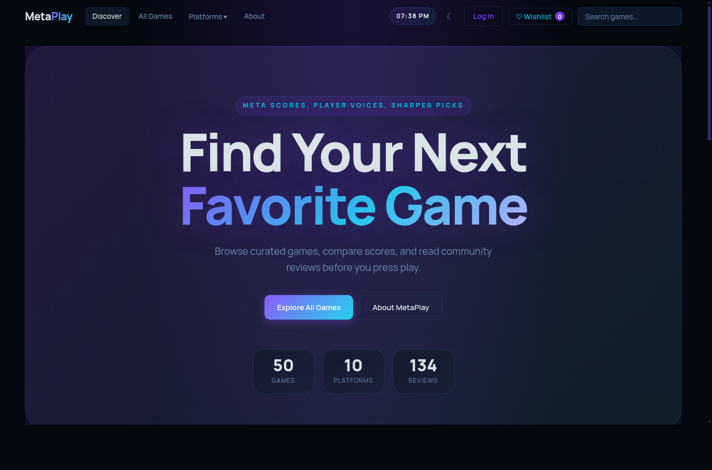
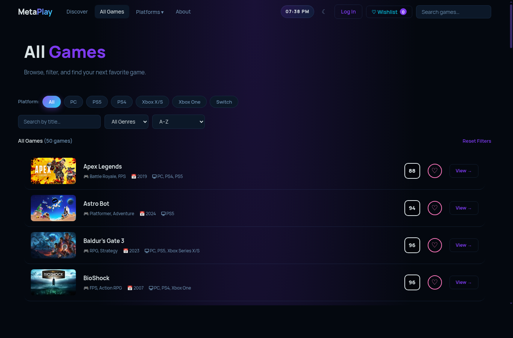
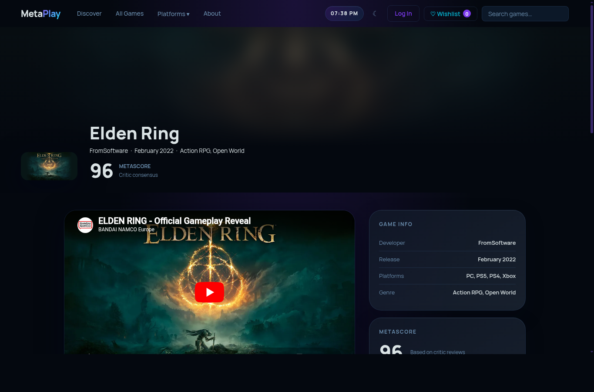
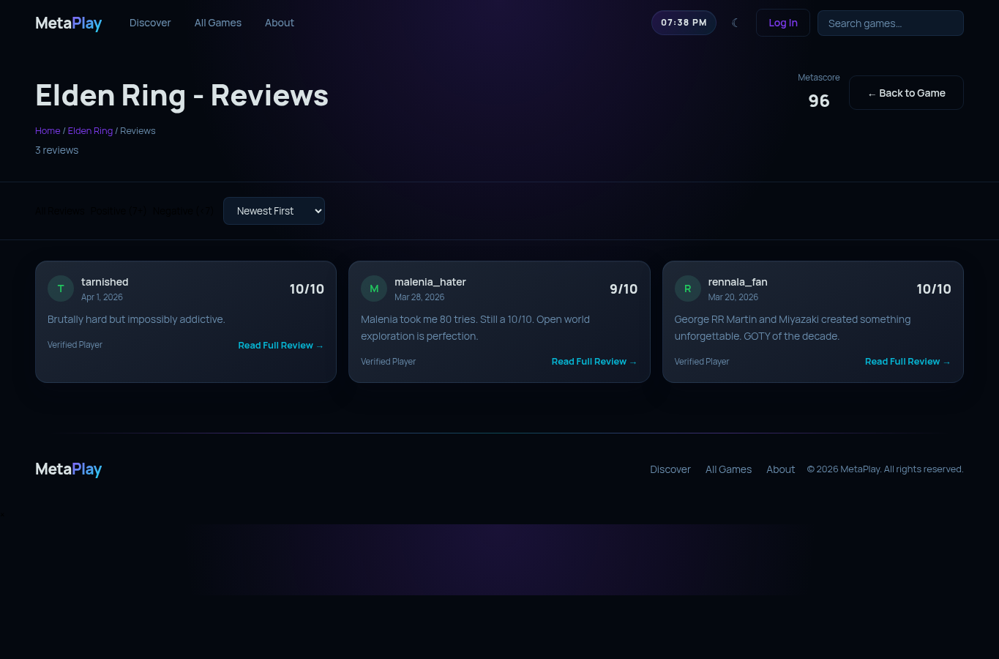
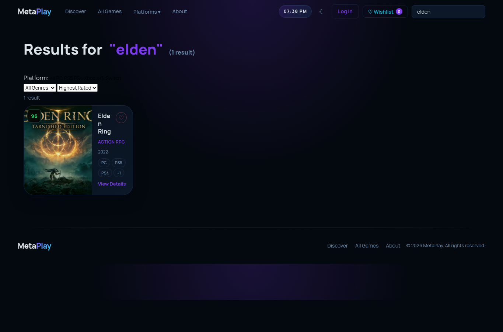
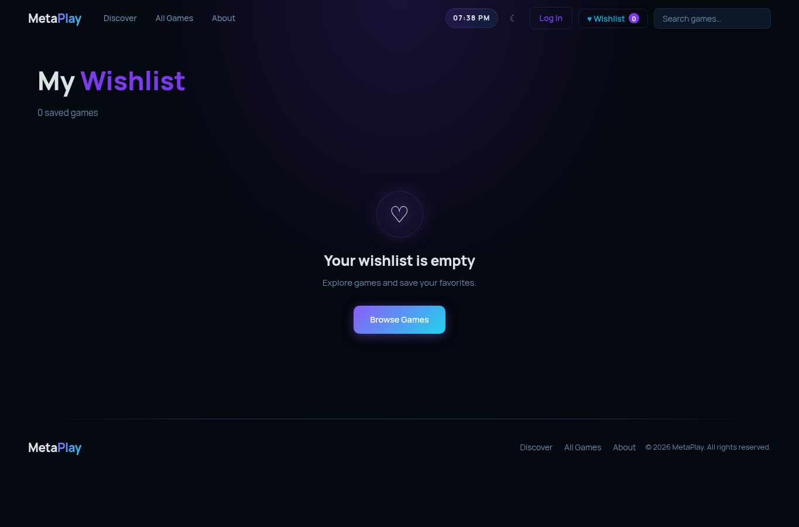
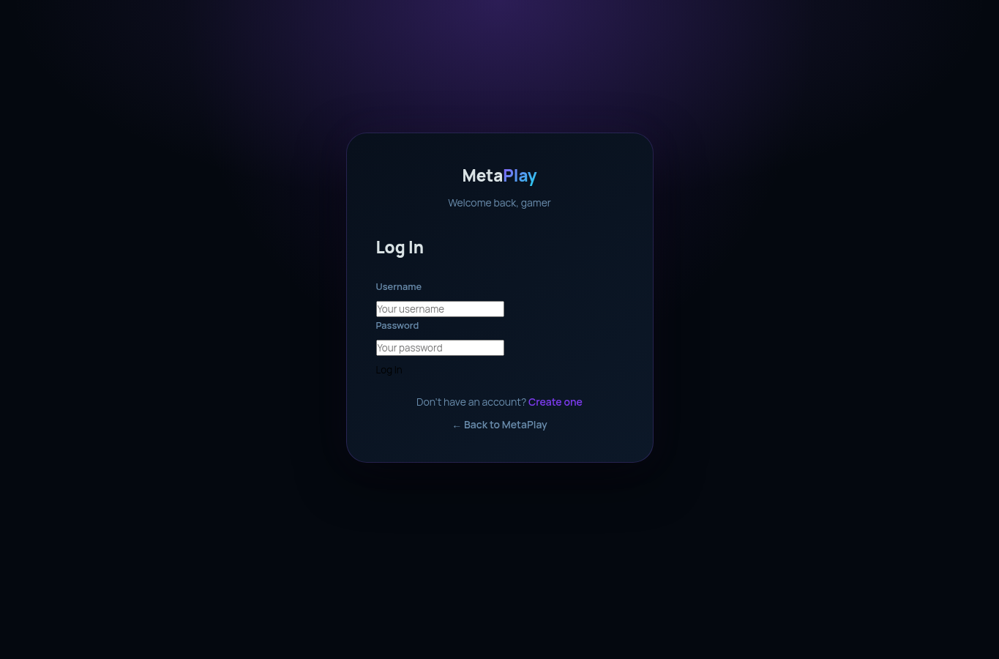
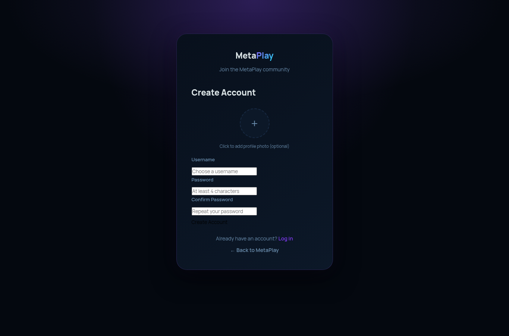
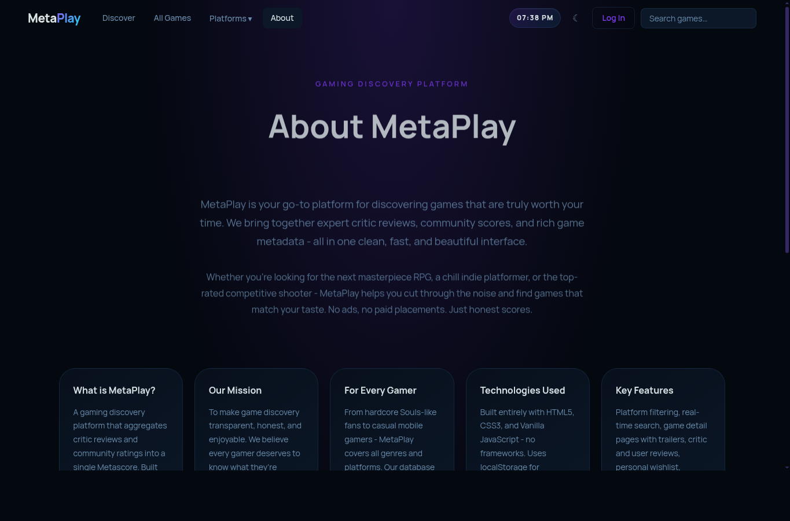

Nama proyek: MetaPlay
Jenis proyek: website katalog dan review game
Bahasa: HTML, CSS, JavaScript
Penyimpanan data: localStorage browser
MetaPlay adalah website sederhana untuk melihat daftar game, membaca review, memberi review, dan menyimpan game ke wishlist. Website ini tidak memakai backend. Semua data login, review user, dan wishlist disimpan di browser lewat localStorage.
Desainnya sekarang sengaja dibuat lebih sederhana. Efek yang terlalu ramai seperti sparkle, bintang animasi, dan glow yang bergerak sudah dikurangi supaya kode CSS lebih mudah dibaca.
index.html untuk halaman utama.games.html untuk daftar semua game.game.html untuk detail satu game.reviews.html untuk daftar review satu game.search.html untuk hasil pencarian.wishlist.html untuk game yang disimpan.login.html dan register.html untuk akun
user.profile.html untuk profil user.about.html untuk penjelasan proyek.CSS utama ada di css/style.css. CSS per halaman ada di
folder css/pages/. JavaScript dipisah ke folder
js/core/, js/components/,
js/features/, dan js/pages/.
Di VS Code, tekan Ctrl + F, lalu cari kata ini:
navbar untuk menu atas.hero section untuk bagian pembuka halaman utama.review page atau reviews page untuk
halaman review.game card untuk kartu game.wishlist untuk fitur simpan game.search page untuk halaman pencarian.profile page untuk halaman profil.game detail page untuk halaman detail game.all games page untuk halaman semua game.Komentar di kode memang dibuat seperti itu supaya bagian penting cepat ditemukan.

Halaman utama adalah pintu masuk website. Bagian atas berisi navbar, search, tombol tema, wishlist, dan login atau profil.
Fitur di halaman ini:
File yang paling sering dibuka untuk halaman ini:
index.htmlcss/pages/home.cssjs/pages/home.js
Halaman ini menampilkan semua game dalam bentuk list. User bisa menyaring game berdasarkan platform, genre, urutan, dan kata pencarian.
Fitur di halaman ini:
File penting:
games.htmlcss/pages/games.cssjs/pages/games.jsjs/features/filters.js
Halaman ini dipakai untuk melihat satu game secara lengkap. Game
dipilih dari query URL, contohnya
game.html?id=elden-ring.
Fitur di halaman ini:
File penting:
game.htmlcss/pages/game.cssjs/pages/game.jsjs/features/reviews.jsjs/features/wishlist.js
Halaman ini menampilkan semua review dari satu game. Halaman ini cocok kalau user ingin membaca komentar lebih banyak tanpa membuka detail game terus.
Fitur di halaman ini:
File penting:
reviews.htmlcss/pages/reviews.cssjs/pages/reviewsPage.jsjs/components/reviewViewer.js
Halaman pencarian muncul saat user mencari game dari navbar. Hasil pencarian tetap bisa difilter lagi.
Fitur di halaman ini:
File penting:
search.htmlcss/pages/search.cssjs/pages/search.js
Wishlist menyimpan game yang disukai user. Data wishlist disimpan di localStorage, jadi masih ada selama browser belum dibersihkan.
Fitur di halaman ini:
File penting:
wishlist.htmlcss/pages/wishlist.cssjs/pages/wishlistPage.jsjs/features/wishlist.js
Halaman login dipakai untuk masuk ke akun yang sudah dibuat. Sistem login ini sederhana dan hanya untuk proyek belajar, bukan untuk website produksi.
Fitur di halaman ini:
File penting:
login.htmlcss/pages/auth.cssjs/pages/login.jsjs/core/auth.js
Halaman register dipakai untuk membuat akun baru. User bisa menambahkan foto profil, tapi bagian ini opsional.
Fitur di halaman ini:
File penting:
register.htmlcss/pages/auth.cssjs/pages/register.jsjs/core/auth.js
Halaman profil menampilkan data user yang sedang login. Dari sini user bisa melihat review yang pernah dibuat dan mengubah username atau foto profil.
Fitur di halaman ini:
File penting:
profile.htmlcss/pages/profile.cssjs/pages/profile.jsjs/core/auth.js
Halaman about menjelaskan tujuan proyek MetaPlay. Isinya lebih ke informasi proyek dan pembuat.
Fitur di halaman ini:
File penting:
about.htmlcss/pages/about.cssjs/pages/about.jsNavbar muncul di semua halaman. Isinya logo, menu halaman, dropdown platform, search, jam, tombol tema, wishlist, dan login atau profil.
File utama:
js/components/navbar.jscss/style.cssWebsite punya tema gelap dan terang. Tombol tema ada di navbar. Pilihan tema disimpan di localStorage.
File utama:
js/core/theme.jscss/style.cssSearch di navbar memberi saran game saat user mengetik. Kalau user menekan hasil pencarian, website membuka detail game atau halaman search.
File utama:
js/components/navbar.jsjs/pages/search.jsUser bisa menulis review di halaman detail game. Review user disimpan di localStorage dan bisa dibaca lagi di halaman review atau profil.
File utama:
js/features/reviews.jsjs/pages/game.jsjs/pages/reviewsPage.jsWishlist menyimpan id game ke localStorage. Game bisa ditambahkan dari kartu game atau halaman detail game.
File utama:
js/features/wishlist.jsjs/components/gameCard.jsjs/pages/wishlistPage.jsLogin dan register dibuat untuk simulasi akun. Karena datanya di localStorage, fitur ini cocok untuk tugas praktikum, bukan untuk website asli yang dipakai publik.
File utama:
js/core/auth.jsjs/pages/login.jsjs/pages/register.jsjs/pages/profile.jsKalau ingin mengubah tampilan halaman tertentu, buka file CSS di
css/pages/. Misalnya mau mengubah halaman review, buka
css/pages/reviews.css.
Kalau ingin mengubah fungsi halaman tertentu, buka file JS di
js/pages/. Misalnya mau mengubah halaman detail game, buka
js/pages/game.js.
Kalau ingin mengubah data game, buka js/core/data.js.
Tambahkan data baru ke fullGameData dengan format yang sama
seperti game lain.
Kalau bingung mulai dari mana, pakai Ctrl + F lalu cari
nama fitur. Komentar di kode sudah diberi kata kunci supaya gampang
dilacak.